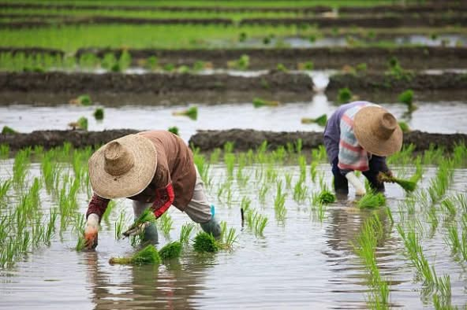
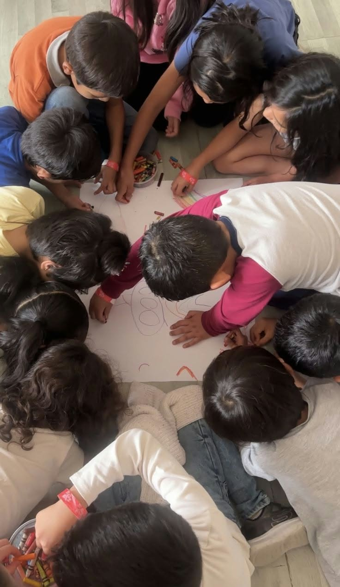

Our Vision
Barangay Pugay is a primary rice producer barangay in San Jose with self-reliant and God-fearing residents,
ecologically-balanced environment, with infrastructures essential to human existence and demonstrating
competence, compassion and honesty in local public service.

Our Mission
To provide quality education through the practice of honesty and dedication among its employees, officials,
by keeping the communal and cultural ties, and enhancing personal and professional growth, and by creating
an effective and collaborative teamwork projects for the welfare and development of the community.
